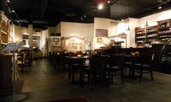
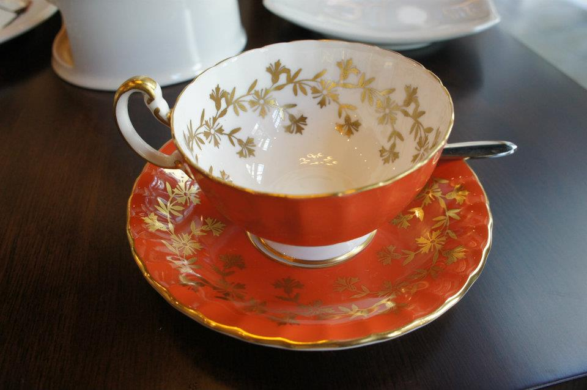

Welcome to La Cuisson Cafe
About us
We are located at Vancouver and proud of our delicate coffee.
The background of the cafe
Jason Hsu, the owner of the cafe, was working at a coffee shop while he was a high school student. There, he learned about the siphon coffee. After he immigrated to Canada in 1998, he opened his third cafe, La Cuisson.
To have a good tea time
Good dishes and cups are necessary for a good tea-time. Our tableware are wonderful!
